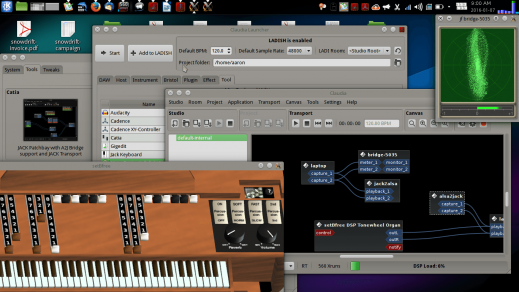
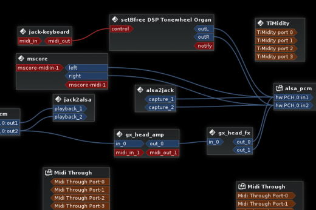

Configuring Linux for music recording and production
If you're a programmer, you'll find GNU/Linux systems quite powerful and robust. When it comes to areas like visual arts, video, business, or gaming, you'll find some tools with promising potential, but lots of bugs, quirks, and challenges. You can accomplish whatever you need in most cases, but the setup and learning curve may not be as smooth as proprietary options on proprietary systems.
In this article, based on my talk at SCaLE 14x this year, we'll cover the basics of configuring your Linux system for music making, highlighting what works best and acknowledging the challenges with recommendations on how to find help.
Getting started
Hardware
To get started with audio, we need some speakers (headphones count). To use any sounds besides those generated entirely by the computer, we want some sound input as well. Older Linux systems used OSS (Open Sound System), and older audio interfaces and computers with Firewire use FFADO, but for almost everyone today, the focus is ALSA: the Advanced Linux Sound Architecture.
Thankfully, ALSA is part of the Linux kernel, so you don't need to know much of anything about it as an end user. All you need to know is if your hardware is supported. Most computers' built-in hardware will work. For better sound and compatibility with guitars, microphones, and other music gear, a more dedicated audio interface makes sense. Any "class-compliant" interface will work, which includes many basic affordable options. A decent number of higher-end interfaces are supported as well. For options with top-notch sound quality, I've had success with the Focusrite Scarlett series. Being updated just by volunteers, the most accessible lists of supported interfaces are rarely complete or up-to-date, but friendly folks on forums and IRC can help.
Kernel setup
For the low-latency timing needed for most music making, a low-latency kernel is recommended (but not absolutely required). The best bet is to install one prepackaged as part of a music-dedicated system.
Distros and repos
A dedicated music system is not needed to start with basics. Most introductory software works on just about any stock GNU/Linux system (and anyone can tweak any system to achieve about anything, if that's something you want to spend your time on). However, dedicated music systems offer many benefits.
I use KXStudio, a superb collection of repos that can be added easily to any Debian-based (and thus also Ubuntu-based) operating system. Once the KXStudio repositories are added, a simple update and installation of the recommended items will give you a system complete with a low-latency kernel, tons of great programs, a dedicated suite of management tools, and tons of effects, plugins, and synthesizers. The KXStudio maintainers (mainly one guy, actually) do a wonderful job keeping things updated and responding to requests. Do keep in mind this is basically volunteer work done effectively full-time, so consider donating to keep this going.

Aaron's personally-customized KXStudio desktop
Other audio-focused packages and distros exist, notably AV Linux and Fedora Jam. Several other systems have been made over the years, but most are not updated or active.
Note about 100% software freedom: Although audio-focused distros Musix and Dynebolic received FSF endorsements, the most up-to-date way to have a 100% free/libre/open music system is to use the core Debian system or the FSF-endorsed Trisquel distro and add the KXStudio repos to your installation.
JACK
While ALSA works directly with the hardware, other audio layers manage all the signals from various programs and send those to ALSA. Some programs support ALSA directly, while others work with PulseAudio or system's like KDE's Phonon, which works with GStreamer or VLC backends. All this confusion basically means that your system setup interacts in different ways with different programs depending on how well they support and interact with these frameworks.
The primary music-dedicated audio system is called JACK. It provides a backend that supports arbitrary paths for audio (and MIDI, the system used for sending control signals for synthesizers) to and from any supported programs. With JACK, a synthesizer output can go into a reverb plugin and then into a recording program while a separate drum program plays. JACK can start and stop all the playback from multiple programs with any one set to be the master timekeeper.
JACK approaches the unix principle of having small programs that do one or a few things well instead of monolithic all-in-one programs. Of course, this requires serious management tools to keep it all together. KXStudio provides the Cadence suite of GUI tools, which many people use outside of KXStudio as well. The most JACK-focused, unix-principled tools come from Jon Liles, the author of the Non series. They provide separate mixer tool, recording tool, sequencer, and a session manager. A session manager is a tool that records all the different settings and connections that you have in JACK and saves them as a set so that you can close and later automatically re-open all these independent programs all set up the same way.

Setting up JACK connections with Cadence tools
Unfortunately, while the concept of JACK and modularity makes sense, the level of support and the quality of the tools is inconsistent. Some combinations work perfectly and smoothly, but some programs offer incomplete support or even no support. Some programs support JACK but their design encourages users to do everything all internally anyway.
Beginners in GNU/Linux music making should try to understand the basic concepts of JACK. This will help them to make sense of the general ecosystem of music tools which are available, whether or not they choose to embrace the modular approach.
In my next article, I'll focus on programs that support JACK but can be used independently as well.
Community support
The Linux Musicians Forum is the best place overall for getting started and getting involved. Check out also the #opensourcemusicians IRC channel on Freenode.net (and lots of projects have their own channels too, of course). The Linux Audio Wiki is a superb resource too, even though some of it can be quite dated.
In practice, setting up your system may involve some troubleshooting. On my particular laptop, for example, if I want to use reliable low-latency settings (needed for quick response when playing live with synths or effects), I need to turn off my networking and set my CPU to Performance mode. Although good guides about these topics exist (some of which I authored myself), each case varies in this complex GNU/Linux world with such diverse tools and hardware. I encourage everyone to make use of the welcoming helpful community. Nothing beats personal support. Just remember to pay-it-forward: Help improve the wikis and answer questions from later newcomers once you get comfortable yourself!
Written by Aaron Wolf